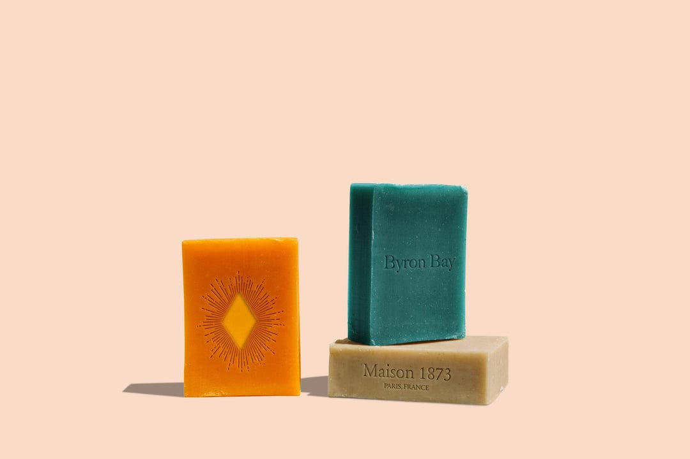

Handmade
Organic Soap


Handmade
Organic Soap

Our products are
natural and organic
Cleanse, moisture and smooth you skin with soap bar made with
organic oils and plants butters, pure
essential oils, organic, herbs and
spices.

Join a workshop

$14

$14

$14
Our Product Gallery
Shampoo a hair care stopble, is formulated to cleanse and nourish hair and scalp. Conditioning agents, it removes impurities and enhances hair health,carrying to various needs like dryness or oilness. It stop all kind of irritation. It reduce the hairfall.
Body of a skincare essential, provides deep hydration and is "Clean Compatible". Not just free of harmful and toxic chemicals but uses only those ingredients that either enhance the health of our hair & skin or support the effectiveness of formulations.

This unique, multi-tasking formula revives your complexion and provides long lasting sun protection. It infuses your skin with moisture, antioxidants and regenerative compounds. The light, bouncy texture sinks into skin without leaving an oily residue for a radiant matte finish.

Enhanced with the goodness of Bulgarian Roses, lush Peonies & Rosehip, this body milk will offer intense moisturisation for skin that’s feathery smooth to touch. longlasting for 24 hours and winter specilist and skily smooth soft skin.

Cleanse moisturize and smooth your skin with a soap bar made with organic oils and plant butters, pure essential oils, organic herbs and spices.
Soft on their health strong on stains.
This 98% organic soap is delicately scented with Cleanse moisturize and smooth your skin with a soap bar made with organic oils and plant butters, pure essential oils, organic herbs and spices Cleanse moisturize and smooth your skin with a soap bar made with organic oils and plant butters, pure essential oils, organic herbs and spices